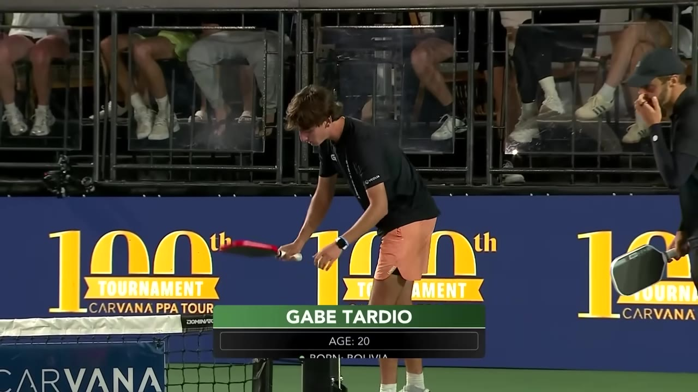
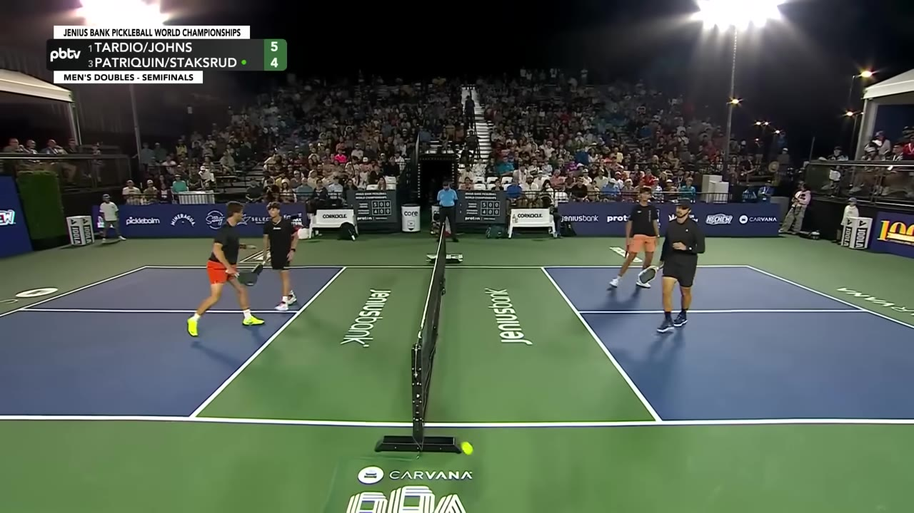
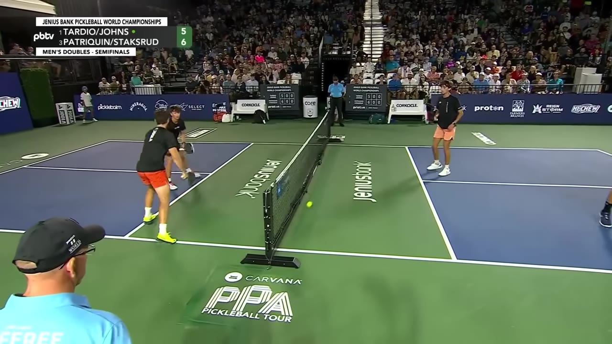
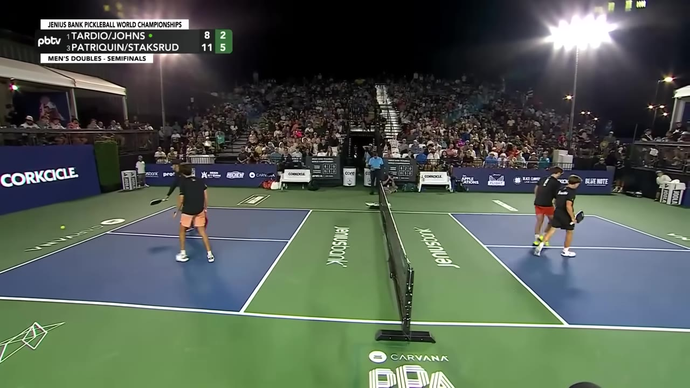
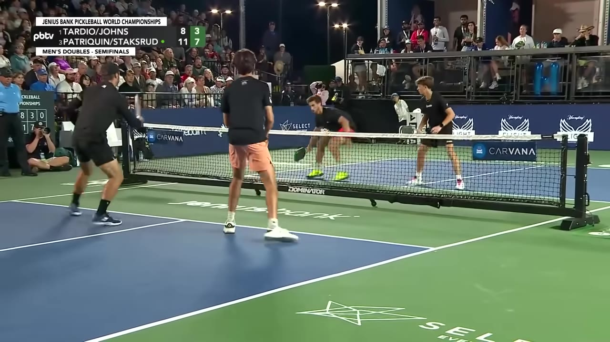
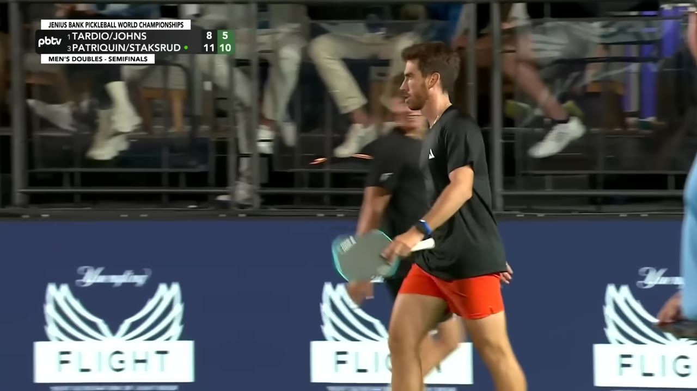
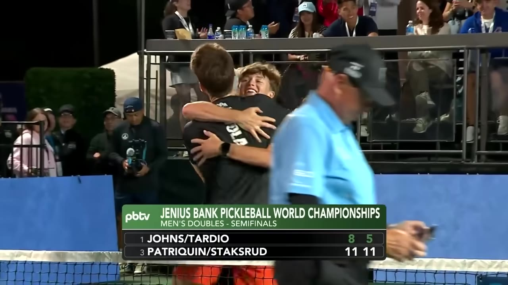

Staksrud and Patriquin survive a brutal windy night match at the Pickleball World Championships to reach Sunday — their sixth straight win.
Watch on YouTubeTardio and Johns start on the left — a miscommunication on the very first rally sets a tense tone. Gabe Tardio is already showing that world-class offense the commentators mention.

I've never seen a man have more trust in his own drops than Gabe Tardio.— Commentator
By the five-minute mark, wind is no longer background noise — it's a player on the court. Balls that should fly out stay in. Lob trajectories become a calculation in three dimensions.

The wind kept that in too.— Commentator
The men hold the line tighter than the women do — a couple feet closer to the sideline — and that proximity buys them extra time to react. The ladies give themselves a bit more room for the rat-tat.
The middle of the match is defined by what happens at the kitchen line: fakes, shoulder tucks, inside-out shots. Patriquin's footwork is so good that every player on tour is jealous of him.

Ben Johns makes one of those diving-middle saves you don't see very often. Three Ernie threats from Staksrud during that point alone, squeezing the size of the court.
The afternoon session has bled into the night session. The stands are packed. No one's going anywhere — the athletes are overdelivering.

This is the new norm. This is not an exception anymore. The last handful of tournaments have been obscene on the Carvana PPA tour.— Commentator
At 26:42, Staksrud throws a lob that he knew the wind would catch. He throws it, watches it, and knows exactly where it'll land. As smart a shot as you'll ever see.

He just threw it and knew it would land in the corner. That's as smart a shot as you will ever see right there.— Commentator
Staksrud's forehand-only dink, slicing off the bounce, has already forced two or three errors from Tardio. It's not just different — it's unreturnably weird.
At 29:48, Patriquin stands at match point. The score is 10–5, nine away from victory. Staksrud has been on top of every counter, getting the paddle on top of the ball twice in awkward positions.

The ball lands in. Match won — 11-8.
